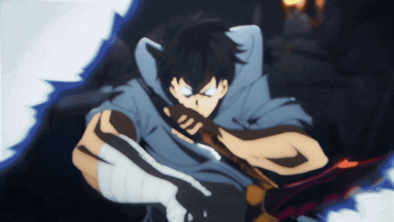

Sinopse
O anime "Solo Leveling" se passa em um mundo onde portais misteriosos começaram a aparecer, conectando a Terra a dimensões cheias de monstros. Para combater essas criaturas, algumas pessoas despertaram habilidades especiais, tornando-se Caçadores.
O protagonista, Sung Jin-woo, é conhecido como o "Caçador mais fraco de todos". Ele faz parte do grupo de Rank E, o mais baixo, e é constantemente ridicularizado por sua fraqueza. Apesar disso, ele continua a trabalhar em dungeons perigosas para sustentar sua família.
Após enfrentar a morte em uma dungeon dupla, Jin-woo desperta uma habilidade misteriosa chamada "Sistema", que lhe permite crescer em poder ao completar missões e derrotar inimigos, como em um jogo de RPG.
Galeria dos Personagens:

Sung Jin-woo, protagonista de Solo Leveling. Ele é o caçador mais forte do mundo e o segundo Shadow Monarch "Ashborn".
Ashborn, foi o Rei dos Mortos e o Monarca original das Sombras. Ele também foi o Governante mais forte e o Maior Fragmento de Luz Brilhante.

Statue Of God, foi a obra-prima e a marionete mais forte do "Arquiteto".
Poderes do Sung:
Com o passar do tempo, Sung Jin-woo despertou o poder de "Monarca das Sombras", ganhando habilidades inimagináveis. O poder mais forte era o de invocar sombras. Algumas das suas sombras mais poderosas incluem:
Igris, um cavaleiro gigante com uma espada que vê Sung Jin-woo como seu Rei e está disposto a servi-lo lealmente.
Beru, o Rei Formiga conquistado por Sung Jin-woo durante a Missão da Ilha Jeju. Ele é um dos soldados mais leais e poderosos de seu exército de sombras.
Bellion, a sombra mais forte e leal a Sung Jin-woo, originalmente servo de Ashborn.